Duas placas, papéis separados
O controle nunca depende da rede.
O Arduino Mega 2560 lê o teclado e a digital, mostra as mensagens, cuida da porta, do LED, do buzzer e da fechadura, e guarda os cadastros. Ele decide sozinho quem entra. A ESP32-CAM é a ponte com o mundo: recebe os eventos do Mega pela serial, tira a foto do acesso autorizado, acerta o relógio pela internet e entrega tudo ao servidor.
A divisão veio de uma conta de pinos. Só o teclado ocupa 8 entradas e saídas, o LCD em 4 bits mais 6, e somando leitor, LED, buzzer, botões e relé o projeto passa de 20 pinos. A ESP32-CAM tem uns 10 livres depois da câmera. Uma placa só não daria.
Componentes e por que cada um
| Componente | Função | Por que este |
|---|---|---|
| Arduino Mega 2560 (clone CH340) | controle local | 54 pinos digitais e 4 seriais em hardware: leitor e câmera ganham cada um a sua, sem serial por software. |
| ESP32-CAM Ai-Thinker, OV2640 | Wi-Fi, NTP, foto | Câmera e Wi-Fi com PSRAM na mesma placa. O ESP32 comum (sem PSRAM) não segura o quadro da câmera. |
| Leitor de digital R307S | autenticação | Guarda os modelos dentro do próprio leitor e compara lá: o Mega só recebe o número do cadastro. Mesmo protocolo e biblioteca da família DY50. |
| Teclado matricial 4x4 rígido | senha e menus | Teclas firmes para uso frequente; # confirma, * limpa, D cancela. |
| LCD 1602 em modo 4 bits | mensagens | Ligado direto no Mega, sem módulo I2C: uma peça a menos e nada de conversor de nível. |
| LED RGB 5 mm | estado | Uma cor por estado (azul espera, verde autorizado, amarelo aberto, vermelho erro, roxo administração), um resistor de 330 Ω por canal. |
| Buzzer ativo 5 V + BC546 | alerta | O transistor acende o buzzer sem puxar corrente do pino; um 10 kΩ entre base e terra o mantém calado no reset. |
| 2 botões de pressão | sensor de porta | Ficam apertados com a porta fechada. Dois em série lógica: a porta só conta como fechada com os dois pressionados. |
| Fechadura elétrica 12 V / 2 A | trava | Corpo de armário (mesmo desenho da DFRobot FIT0620), 3 parafusos M4, bobina que só pode ficar energizada por alguns segundos. |
| Módulo relé GBK P5 | chave da fechadura | Acionado por transistor e ativo em HIGH, casa com o pull-down de 10 kΩ do pino. Um módulo optoacoplado, ativo em LOW, abriria a porta a cada reset. |
| LM2596 + MB102 | energia | O LM2596 desce os 12 V para 7 V com folga de 2 a 3 A; a MB102 gera os 5 V e os 3,3 V que o leitor desta unidade exige. |
Alimentação
Uma fonte de 12 V para tudo, dividida em três caminhos.
- Mega pelo VIN, em 12 V. O regulador da própria placa gera a lógica dele. O pino 5V do Mega não encosta em nada: ligar ali a trilha de 5 V põe duas fontes no mesmo barramento, e na bancada isso apagou o LED do Mega na hora.
- LM2596 em 7,0 V (saiu de fábrica em 11,30 V; anti-horário baixa) soldado no jack da MB102, que gera 5 V numa trilha e 3,3 V na outra.
- Fechadura direto dos 12 V, chaveada pelo relé. O negativo dela volta direto ao terra da fonte, nunca pela protoboard: são 2 A.
Pinagem do Arduino Mega
| Pino | Sinal | Liga em | Observação |
|---|---|---|---|
| D16 / D17 | Serial 2 | ESP32-CAM (GPIO13 / GPIO14) | TX passa por divisor 5 V → 3,3 V |
| D18 / D19 | Serial 1 | leitor de digital | TX passa por divisor; serigrafia do clone vem trocada |
| D22 a D25 | linhas do teclado | R1 a R4 | entradas com pull-up |
| D26 a D29 | colunas do teclado | C1 a C4 | saídas |
| D30 / D31 | botões da porta | contato para o terra | pull-up interno |
| D32 a D34 | LED vermelho, verde, azul | 330 Ω por canal | |
| D35 | fechadura | sinal do relé | 10 kΩ para o terra: relé desligado no reset |
| D36 | buzzer | base do BC546 por 330 Ω | 10 kΩ base-terra |
| D37 a D42 | LCD RS, E, D4 a D7 | pinos 4, 6, 11 a 14 do LCD | RW (pino 5) no terra |
| A0 | sensor de corrente (opcional) | ACS712 | firmware ainda não lê |
ESP32-CAM
| Pino | Liga em | Observação |
|---|---|---|
| 5V / GND | barra de 5 V da MB102 | nunca alimentar pelo 3V3 |
| GPIO13 | meio do divisor vindo do D16 | recebe do Mega em 3,3 V |
| GPIO14 | D17 do Mega, direto | 3,3 V é lido como alto pelo Mega |
| GPIO2 / 15 / 12 | gravação do Mega pela rede | a câmera pode regravar o Mega sem cabo USB |
Os divisores existem porque o Mega fala em 5 V e a ESP32-CAM e o leitor só aguentam 3,3 V. Um resistor em cima e o dobro embaixo dão dois terços da tensão: 5 V viram 3,3 V. Na bancada, sem resistor de 1 kΩ sobrando, o da câmera foi feito com 3 x 330 Ω em cima e 6 x 330 Ω embaixo, mesma proporção.
Os esquemas da bancada
Desenhados bloco a bloco na remontagem de 05 e 06/11/2026. Clique para ampliar.
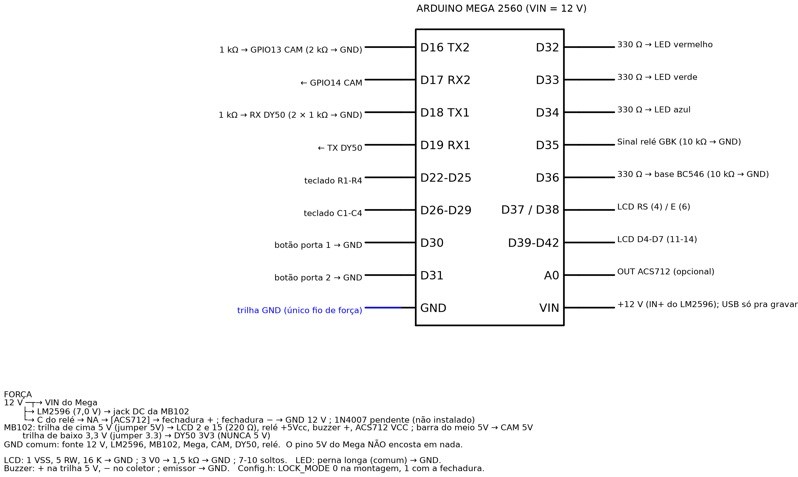

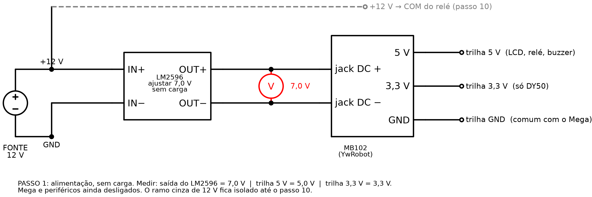

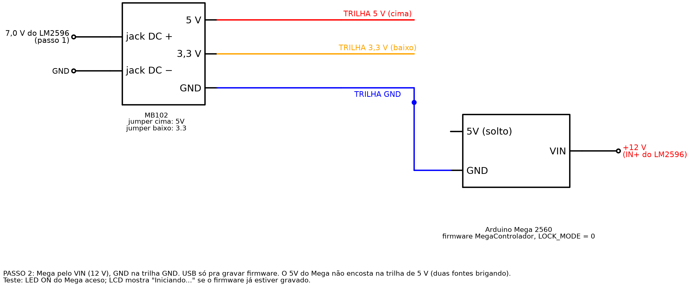

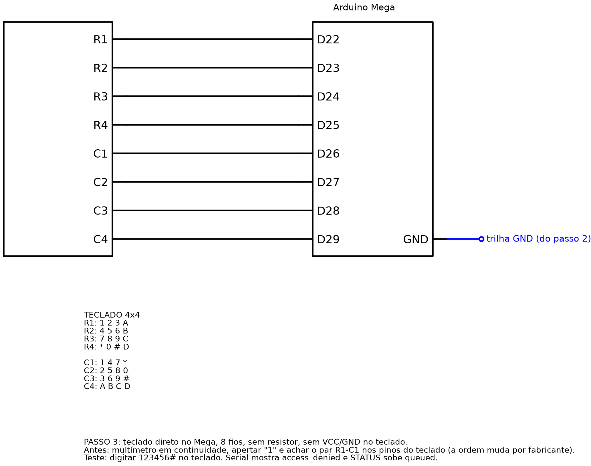

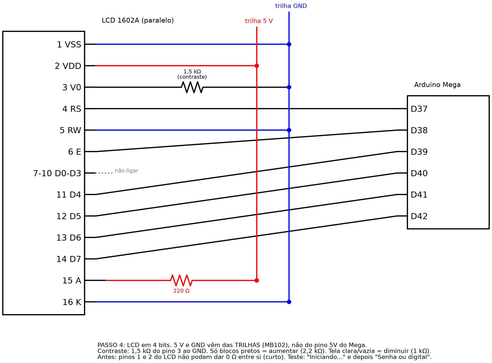

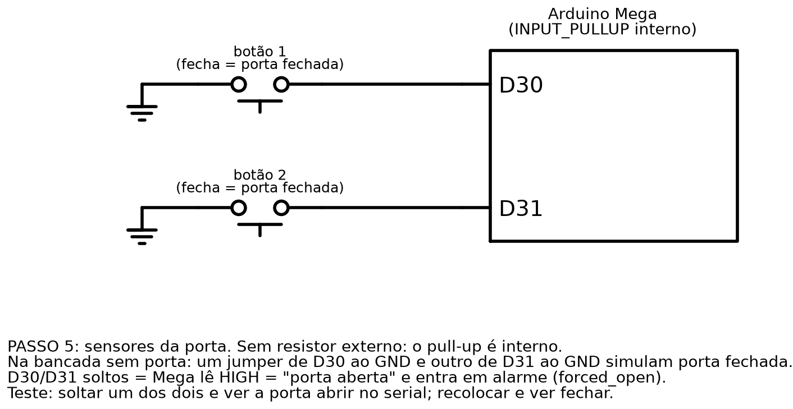

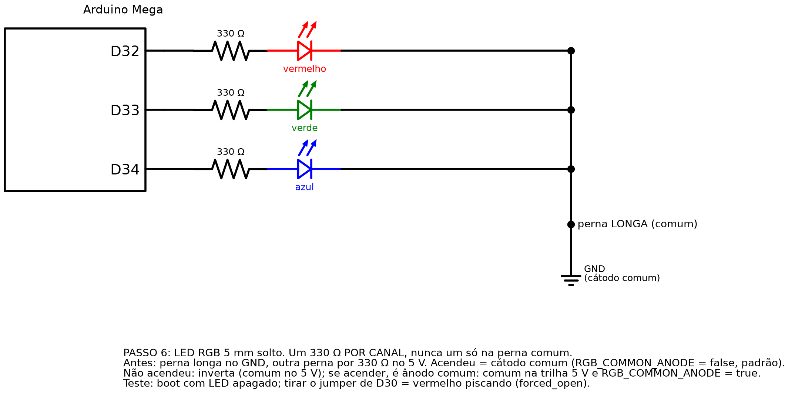

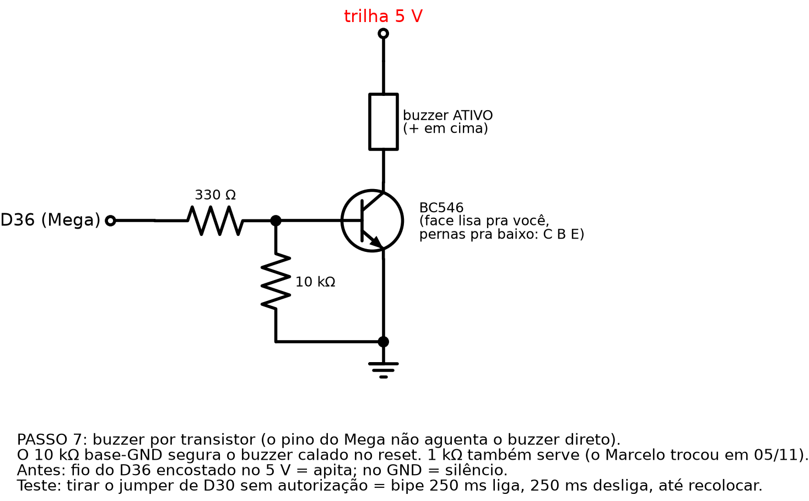

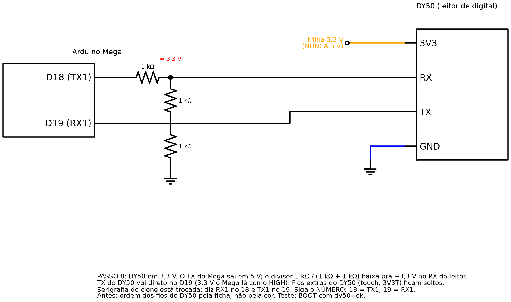

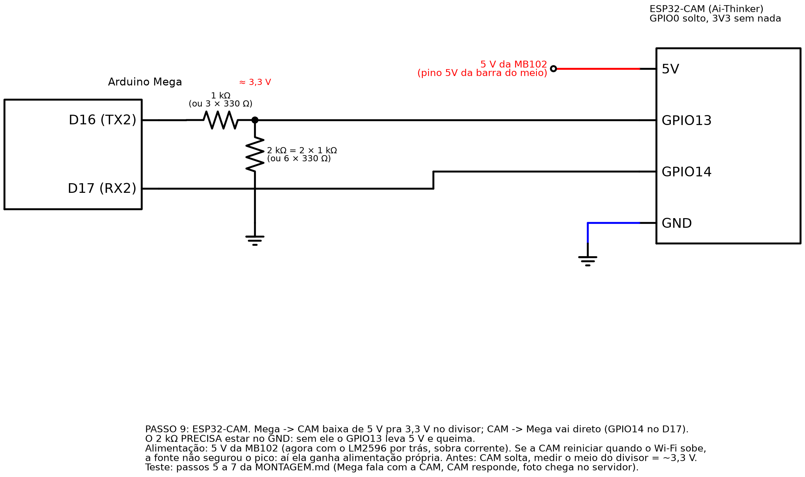

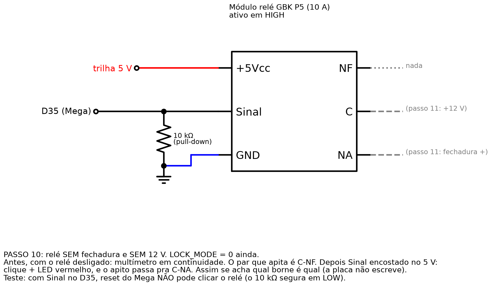

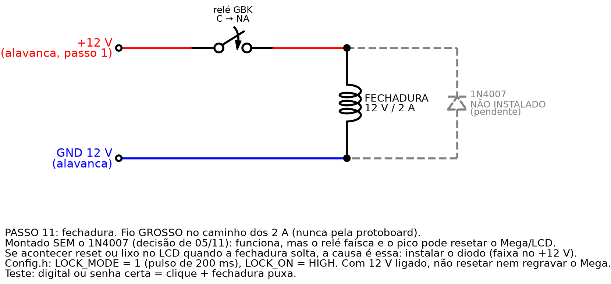

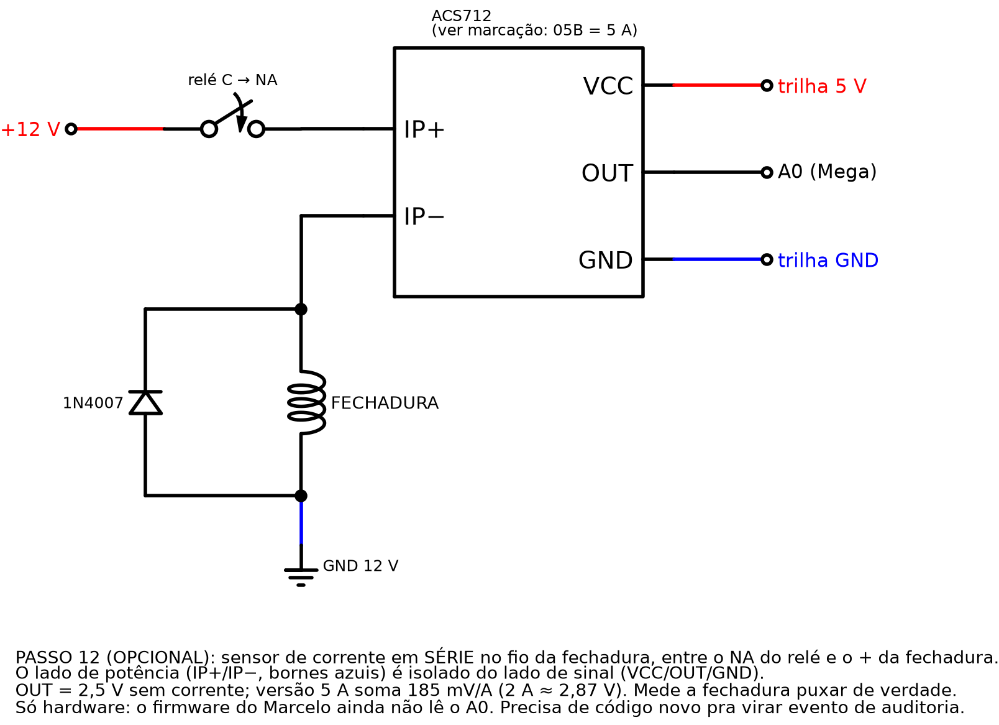
O que a bancada ensinou
- Serigrafia trocada. No Mega clone a placa diz TX1 no pino 19. Pelo microcontrolador, TX1 é o 18. O leitor foi ligado pelo número, não pela legenda.
- Buzzer apitando com tudo desligado. O positivo estava no coletor do transistor. Positivo vai na trilha de 5 V, negativo no coletor.
- LCD só com blocos. O pino RW ficou sem fio duas vezes (04/11 e na remontagem). A biblioteca assume RW no terra.
- Relé que abriria no boot. O módulo de 2 relés optoacoplado é ativo em LOW; com o pull-down do pino, acionaria a fechadura a cada reset. Ficou o GBK, ativo em HIGH.
- Fonte de 7 V / 500 mA sem folga para câmera, relé, LCD e leitor juntos. Trocada por 12 V com regulador.
Roteiro de teste da bancada
- Buzzer calado com o Mega desligado.
- Ligar pelo VIN: LED da placa, luz do LCD, mensagem de início.
- Gravar o firmware com a fechadura desabilitada (
LOCK_MODE = 0). - Testar um bloco por vez: teclado, LCD, porta, LED (descobrir se é cátodo ou ânodo comum), buzzer e leitor.
- Câmera: medir 3,3 V no meio do divisor antes de ligar; observar se reinicia quando o Wi-Fi sobe.
- Relé sem 12 V: mapear comum, normalmente aberto e fechado com o multímetro; confirmar que o reset não clica.
- Fechadura: medir a bobina, testar à mão por 1 s, só então habilitar no firmware.